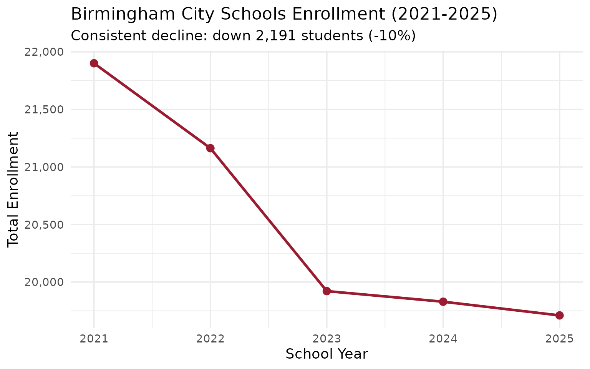
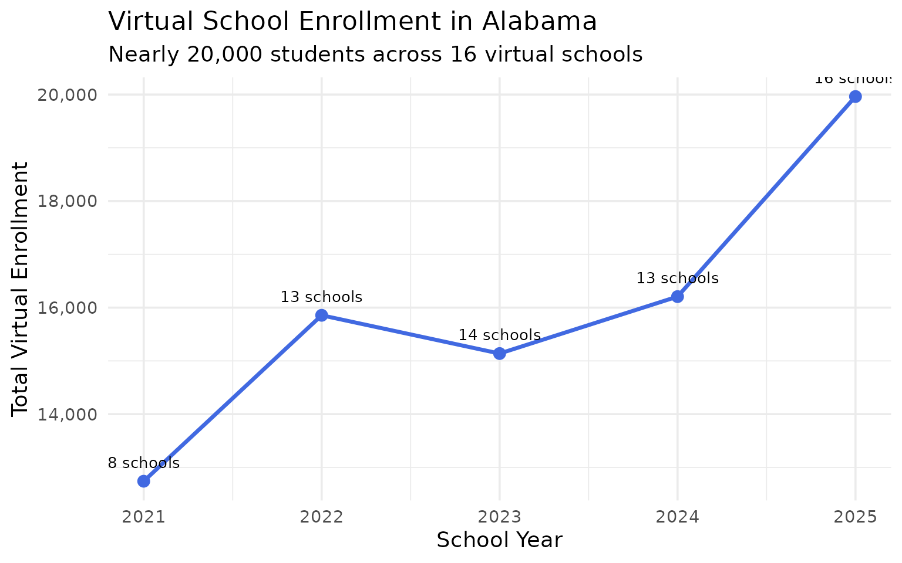
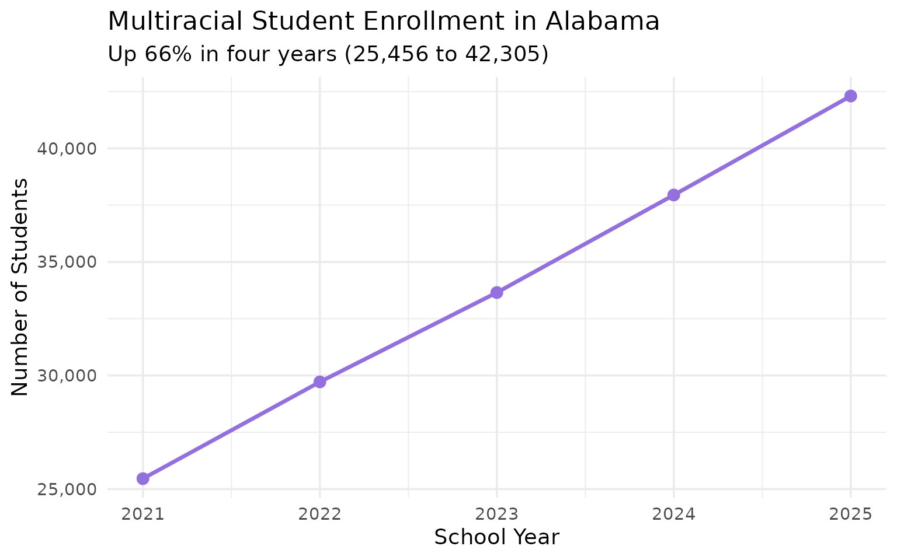

15 Insights from Alabama School Enrollment Data
Source:vignettes/enrollment_hooks.Rmd
enrollment_hooks.Rmd
library(alschooldata)
library(dplyr)
library(tidyr)
library(ggplot2)
theme_set(theme_minimal(base_size = 14))This vignette explores Alabama’s public school enrollment data from the Alabama State Department of Education (ALSDE), covering 5 years (2021-2025) of campus-level data across 153 districts and 1,362 schools.
1. Alabama lost 12,000 students since 2022
Statewide enrollment peaked at 735,808 in 2022 and has since declined by over 18,000 students. The 2024 drop of 11,073 was the steepest single-year decline.
if (!exists("enr")) {
enr <- fetch_enr_multi(2021:2025, use_cache = TRUE)
}
state_totals <- enr |>
filter(is_state, subgroup == "total_enrollment", grade_level == "TOTAL") |>
select(end_year, n_students) |>
arrange(end_year) |>
mutate(change = n_students - lag(n_students),
pct_change = round(change / lag(n_students) * 100, 2))
stopifnot(nrow(state_totals) > 0)
state_totals
#> end_year n_students change pct_change
#> 1 2021 729786 NA NA
#> 2 2022 735808 6022 0.83
#> 3 2023 729789 -6019 -0.82
#> 4 2024 718716 -11073 -1.52
#> 5 2025 717473 -1243 -0.17
ggplot(state_totals, aes(x = end_year, y = n_students)) +
geom_line(linewidth = 1.2, color = "#9B1B30") +
geom_point(size = 3, color = "#9B1B30") +
scale_y_continuous(labels = scales::comma, limits = c(710000, 740000)) +
scale_x_continuous(breaks = 2021:2025) +
labs(
title = "Alabama Public School Enrollment (2021-2025)",
subtitle = "Enrollment peaked in 2022 and has declined since",
x = "School Year (ending)",
y = "Total Enrollment"
)
2. Hispanic enrollment surged from 9.5% to 12.2% in four years
Hispanic students are the fastest-growing racial/ethnic group in Alabama schools, adding nearly 19,000 students since 2021 while overall enrollment declined.
hispanic <- enr |>
filter(is_state, subgroup == "hispanic", grade_level == "TOTAL") |>
mutate(pct = round(pct * 100, 1)) |>
select(end_year, n_students, pct) |>
arrange(end_year)
stopifnot(nrow(hispanic) > 0)
hispanic
#> end_year n_students pct
#> 1 2021 69093 9.5
#> 2 2022 74561 10.1
#> 3 2023 78638 10.8
#> 4 2024 84661 11.8
#> 5 2025 87790 12.2
ggplot(hispanic, aes(x = end_year, y = pct)) +
geom_line(linewidth = 1.2, color = "#2E8B57") +
geom_point(size = 3, color = "#2E8B57") +
scale_x_continuous(breaks = 2021:2025) +
labs(
title = "Hispanic Student Share in Alabama Schools",
subtitle = "Growing from 9.5% to 12.2% of total enrollment",
x = "School Year",
y = "Percent of Total Enrollment"
)
3. Mobile County is Alabama’s largest system – and shrinking fastest
Mobile County Public Schools serves 47,366 students, nearly 14,000 more than second-place Jefferson County. But Mobile has lost 5,768 students since 2021, a decline of 10.9%.
enr_2025 <- enr |> filter(end_year == 2025)
top_10 <- enr_2025 |>
filter(is_district, subgroup == "total_enrollment", grade_level == "TOTAL") |>
arrange(desc(n_students)) |>
head(10) |>
select(district_name, n_students)
stopifnot(nrow(top_10) > 0)
top_10
#> district_name n_students
#> 1 Mobile County 47366
#> 2 Jefferson County 33844
#> 3 Baldwin County 30491
#> 4 Montgomery County 25491
#> 5 Huntsville City 22776
#> 6 Shelby County 20159
#> 7 Madison County 19769
#> 8 Birmingham City 19710
#> 9 Tuscaloosa County 18135
#> 10 Limestone County 15816
top_10 |>
mutate(district_name = forcats::fct_reorder(district_name, n_students)) |>
ggplot(aes(x = n_students, y = district_name)) +
geom_col(fill = "#9B1B30") +
scale_x_continuous(labels = scales::comma) +
labs(
title = "Alabama's 10 Largest School Systems (2025)",
x = "Total Enrollment",
y = NULL
)
4. Black Belt counties are hemorrhaging students
Perry County has lost 32% of its enrollment since 2021 – the steepest decline of any Alabama district with 500+ students. Sumter County lost 29%, and Selma City lost 24%.
decline <- enr |>
filter(is_district, subgroup == "total_enrollment", grade_level == "TOTAL",
end_year %in% c(2021, 2025)) |>
select(end_year, district_name, n_students) |>
pivot_wider(names_from = end_year, values_from = n_students) |>
filter(!is.na(`2021`), !is.na(`2025`), `2021` >= 500) |>
mutate(change = `2025` - `2021`,
pct_change = round((`2025` / `2021` - 1) * 100, 1)) |>
arrange(pct_change) |>
head(10)
stopifnot(nrow(decline) > 0)
decline
#> # A tibble: 10 × 5
#> district_name `2021` `2025` change pct_change
#> <chr> <dbl> <dbl> <dbl> <dbl>
#> 1 Perry County 1148 778 -370 -32.2
#> 2 Sumter County 1202 851 -351 -29.2
#> 3 Talladega City 1837 1356 -481 -26.2
#> 4 Selma City 2776 2124 -652 -23.5
#> 5 Dallas County 2775 2211 -564 -20.3
#> 6 Wilcox County 1404 1127 -277 -19.7
#> 7 Conecuh County 1474 1197 -277 -18.8
#> 8 Lowndes County 1311 1081 -230 -17.5
#> 9 Anniston City 1980 1643 -337 -17
#> 10 Roanoke City 1475 1239 -236 -16
decline |>
mutate(district_name = forcats::fct_reorder(district_name, pct_change)) |>
ggplot(aes(x = pct_change, y = district_name)) +
geom_col(fill = "#B22222") +
geom_text(aes(label = paste0(pct_change, "%")), hjust = 1.1, color = "white", size = 3.5) +
labs(
title = "Alabama's Fastest-Declining Districts (2021-2025)",
subtitle = "Districts with 500+ students in 2021",
x = "Percent Change",
y = NULL
)
5. Alabama’s student body: 56% white, 32% Black, 12% Hispanic
Alabama’s racial demographics are shifting. White students still form the majority but their share dropped from 58.3% to 56.1% since 2021, while Hispanic and multiracial shares both grew.
demographics <- enr_2025 |>
filter(is_state, grade_level == "TOTAL",
subgroup %in% c("white", "black", "hispanic", "asian",
"native_american", "pacific_islander", "multiracial")) |>
mutate(pct = round(pct * 100, 1)) |>
select(subgroup, n_students, pct) |>
arrange(desc(n_students))
stopifnot(nrow(demographics) > 0)
demographics
#> subgroup n_students pct
#> 1 white 402422 56.1
#> 2 black 228708 31.9
#> 3 hispanic 87790 12.2
#> 4 multiracial 42305 5.9
#> 5 native_american 30582 4.3
#> 6 asian 11511 1.6
#> 7 pacific_islander 1945 0.3
demographics |>
mutate(subgroup = forcats::fct_reorder(subgroup, n_students)) |>
ggplot(aes(x = n_students, y = subgroup, fill = subgroup)) +
geom_col(show.legend = FALSE) +
geom_text(aes(label = paste0(pct, "%")), hjust = -0.1) +
scale_x_continuous(labels = scales::comma, expand = expansion(mult = c(0, 0.15))) +
scale_fill_brewer(palette = "Set2") +
labs(
title = "Alabama Student Demographics (2025)",
x = "Number of Students",
y = NULL
)
6. Nearly 3 in 5 Alabama students are economically disadvantaged
The economically disadvantaged rate jumped from 51% in 2021 to 65% in 2023, then settled at 59% in 2025. This volatility may reflect changes in reporting methodology rather than true poverty shifts.
econ <- enr |>
filter(is_state, grade_level == "TOTAL", subgroup == "econ_disadv") |>
mutate(pct = round(pct * 100, 1)) |>
select(end_year, n_students, pct) |>
arrange(end_year)
stopifnot(nrow(econ) > 0)
econ
#> end_year n_students pct
#> 1 2021 371737 50.9
#> 2 2022 351049 47.7
#> 3 2023 477329 65.4
#> 4 2024 465245 64.7
#> 5 2025 422645 58.9
ggplot(econ, aes(x = end_year, y = pct)) +
geom_line(linewidth = 1.2, color = "#8B4513") +
geom_point(size = 3, color = "#8B4513") +
scale_x_continuous(breaks = 2021:2025) +
labs(
title = "Economically Disadvantaged Students in Alabama",
subtitle = "Rate jumped sharply in 2023, possibly reflecting reporting changes",
x = "School Year",
y = "Percent of Total Enrollment"
)
7. Birmingham City lost 2,191 students in four years
Birmingham City Schools has shed students every single year since 2021, dropping from 21,901 to 19,710 – a 10% decline. Once a top-5 Alabama district, it now ranks 8th.
bham <- enr |>
filter(is_district, subgroup == "total_enrollment", grade_level == "TOTAL",
grepl("Birmingham City", district_name)) |>
select(end_year, n_students) |>
arrange(end_year) |>
mutate(change = n_students - lag(n_students))
stopifnot(nrow(bham) > 0)
bham
#> end_year n_students change
#> 1 2021 21901 NA
#> 2 2022 21163 -738
#> 3 2023 19921 -1242
#> 4 2024 19829 -92
#> 5 2025 19710 -119
ggplot(bham, aes(x = end_year, y = n_students)) +
geom_line(linewidth = 1.2, color = "#9B1B30") +
geom_point(size = 3, color = "#9B1B30") +
scale_y_continuous(labels = scales::comma) +
scale_x_continuous(breaks = 2021:2025) +
labs(
title = "Birmingham City Schools Enrollment (2021-2025)",
subtitle = "Consistent decline: down 2,191 students (-10%)",
x = "School Year",
y = "Total Enrollment"
)
8. Virtual schools exploded to 20,000 students
Alabama’s virtual schools grew from 12,741 students (8 schools) in 2021 to 19,963 students (16 schools) in 2025. Alabama Connections Academy alone enrolls 7,339, making Limestone County appear to be one of the state’s largest districts.
virtual <- enr |>
filter(is_campus, subgroup == "total_enrollment", grade_level == "TOTAL",
grepl("Virtual|Connections|Destinations", campus_name, ignore.case = TRUE)) |>
group_by(end_year) |>
summarize(n_schools = n(), total_students = sum(n_students), .groups = "drop") |>
arrange(end_year)
stopifnot(nrow(virtual) > 0)
virtual
#> # A tibble: 5 × 3
#> end_year n_schools total_students
#> <dbl> <int> <dbl>
#> 1 2021 8 12741
#> 2 2022 13 15856
#> 3 2023 14 15138
#> 4 2024 13 16207
#> 5 2025 16 19963
ggplot(virtual, aes(x = end_year, y = total_students)) +
geom_line(linewidth = 1.2, color = "#4169E1") +
geom_point(size = 3, color = "#4169E1") +
geom_text(aes(label = paste0(n_schools, " schools")), vjust = -1.2, size = 3.5) +
scale_y_continuous(labels = scales::comma) +
scale_x_continuous(breaks = 2021:2025) +
labs(
title = "Virtual School Enrollment in Alabama",
subtitle = "Nearly 20,000 students across 16 virtual schools",
x = "School Year",
y = "Total Virtual Enrollment"
)
9. Multiracial students are the fastest-growing demographic
Students identifying as multiracial grew from 25,456 (3.5%) to 42,305 (5.9%) since 2021 – a 66% increase. At this pace, multiracial students will outnumber Asian and Native American students combined.
multi <- enr |>
filter(is_state, subgroup == "multiracial", grade_level == "TOTAL") |>
mutate(pct = round(pct * 100, 1)) |>
select(end_year, n_students, pct) |>
arrange(end_year)
stopifnot(nrow(multi) > 0)
multi
#> end_year n_students pct
#> 1 2021 25456 3.5
#> 2 2022 29716 4.0
#> 3 2023 33651 4.6
#> 4 2024 37946 5.3
#> 5 2025 42305 5.9
ggplot(multi, aes(x = end_year, y = n_students)) +
geom_line(linewidth = 1.2, color = "#9370DB") +
geom_point(size = 3, color = "#9370DB") +
scale_y_continuous(labels = scales::comma) +
scale_x_continuous(breaks = 2021:2025) +
labs(
title = "Multiracial Student Enrollment in Alabama",
subtitle = "Up 66% in four years (25,456 to 42,305)",
x = "School Year",
y = "Number of Students"
)
10. English Learners grew 52% in four years
Alabama’s English Learner population surged from 33,595 (4.6%) to 51,068 (7.1%), closely tracking the growth in Hispanic enrollment and reflecting the state’s demographic transformation.
el_trend <- enr |>
filter(is_state, subgroup == "lep", grade_level == "TOTAL") |>
mutate(pct = round(pct * 100, 1)) |>
select(end_year, n_students, pct) |>
arrange(end_year)
stopifnot(nrow(el_trend) > 0)
el_trend
#> end_year n_students pct
#> 1 2021 33595 4.6
#> 2 2022 36956 5.0
#> 3 2023 41430 5.7
#> 4 2024 47838 6.7
#> 5 2025 51068 7.1
ggplot(el_trend, aes(x = end_year, y = n_students)) +
geom_line(linewidth = 1.2, color = "#4169E1") +
geom_point(size = 3, color = "#4169E1") +
scale_y_continuous(labels = scales::comma) +
scale_x_continuous(breaks = 2021:2025) +
labs(
title = "English Learner Enrollment in Alabama",
subtitle = "52% growth: 33,595 to 51,068 students",
x = "School Year",
y = "Number of EL Students"
)
11. Special Ed spiked to 18% then fell back to 14.5%
Special education enrollment jumped from 14% to 18% between 2021 and 2024, then dropped to 14.5% in 2025. The spike may reflect expanded eligibility or pandemic-related identification, with the recent decline suggesting a correction.
sped <- enr |>
filter(is_state, subgroup == "special_ed", grade_level == "TOTAL") |>
mutate(pct = round(pct * 100, 1)) |>
select(end_year, n_students, pct) |>
arrange(end_year)
stopifnot(nrow(sped) > 0)
sped
#> end_year n_students pct
#> 1 2021 102117 14.0
#> 2 2022 130946 17.8
#> 3 2023 130655 17.9
#> 4 2024 129379 18.0
#> 5 2025 104371 14.5
ggplot(sped, aes(x = end_year, y = pct)) +
geom_line(linewidth = 1.2, color = "#8B4513") +
geom_point(size = 3, color = "#8B4513") +
geom_hline(yintercept = 14.4, linetype = "dashed", color = "gray50") +
annotate("text", x = 2021.5, y = 14.8, label = "National avg (~14.4%)", color = "gray50") +
scale_x_continuous(breaks = 2021:2025) +
labs(
title = "Students with Disabilities in Alabama",
subtitle = "Spiked to 18% in 2022-2024, then fell to 14.5% in 2025",
x = "School Year",
y = "Percent of Total Enrollment"
)
12. 3rd grade is the largest class in Alabama
With 57,054 students, 3rd grade edges out 1st grade (56,798) and kindergarten (55,467) as the most enrolled grade level in 2025.
grade_dist <- enr_2025 |>
filter(is_state, subgroup == "total_enrollment",
grade_level %in% c("K", "01", "02", "03", "04", "05",
"06", "07", "08", "09", "10", "11", "12")) |>
mutate(grade_level = factor(grade_level,
levels = c("K", "01", "02", "03", "04", "05",
"06", "07", "08", "09", "10", "11", "12"))) |>
select(grade_level, n_students) |>
arrange(grade_level)
stopifnot(nrow(grade_dist) > 0)
grade_dist
#> grade_level n_students
#> 1 K 55467
#> 2 01 56798
#> 3 02 56515
#> 4 03 57054
#> 5 04 54307
#> 6 05 53653
#> 7 06 53450
#> 8 07 54573
#> 9 08 55053
#> 10 09 56624
#> 11 10 55541
#> 12 11 53178
#> 13 12 50839
ggplot(grade_dist, aes(x = grade_level, y = n_students)) +
geom_col(fill = "#9B1B30") +
geom_col(data = grade_dist |> filter(grade_level == "03"),
fill = "#FF6347") +
scale_y_continuous(labels = scales::comma) +
labs(
title = "Enrollment by Grade Level (2025)",
subtitle = "3rd grade has the most students; 12th grade has the fewest",
x = "Grade Level",
y = "Number of Students"
)
13. Mobile County: 73% low-income, 51% Black
Mobile County’s demographics are dramatically different from statewide averages. Its economically disadvantaged rate (73%) is 14 points above the state average, and its Black student population (51%) is 19 points above the statewide share.
mobile_demo <- enr_2025 |>
filter(is_district, grade_level == "TOTAL",
grepl("Mobile County", district_name),
subgroup %in% c("white", "black", "hispanic",
"econ_disadv", "total_enrollment")) |>
mutate(pct = round(pct * 100, 1)) |>
select(subgroup, n_students, pct) |>
arrange(desc(n_students))
stopifnot(nrow(mobile_demo) > 0)
mobile_demo
#> subgroup n_students pct
#> 1 total_enrollment 47366 100.0
#> 2 econ_disadv 34569 73.0
#> 3 black 24070 50.8
#> 4 white 17525 37.0
#> 5 hispanic 3262 6.914. Charter schools are Alabama’s smallest districts
Alabama’s charter sector is small but growing. The smallest 10 districts by enrollment are dominated by charter and specialty schools, with Freedom Prep Academy enrolling just 36 students.
smallest <- enr_2025 |>
filter(is_district, subgroup == "total_enrollment", grade_level == "TOTAL") |>
arrange(n_students) |>
head(10) |>
select(district_name, n_students)
stopifnot(nrow(smallest) > 0)
smallest
#> district_name n_students
#> 1 Freedom Prep Academy 36
#> 2 Alabama Aerospace and Aviation 146
#> 3 Floretta P. Carson Visual and Performing Arts 193
#> 4 Covenant Academy of Mobile 302
#> 5 Magic City Acceptance Academy 307
#> 6 Breakthrough Charter School 359
#> 7 Empower Schools of Alabama 375
#> 8 Linden City 380
#> 9 LIFE Academy 497
#> 10 Legacy Prep 501
smallest |>
mutate(district_name = forcats::fct_reorder(district_name, n_students)) |>
ggplot(aes(x = n_students, y = district_name)) +
geom_col(fill = "#556B2F") +
scale_x_continuous(labels = scales::comma) +
labs(
title = "Alabama's 10 Smallest School Systems (2025)",
subtitle = "Charter and specialty schools dominate the smallest districts",
x = "Total Enrollment",
y = NULL
)
15. Middle school enrollment is shrinking while elementary grows
Elementary (K-5) and high school (9-12) enrollment both grew since 2021, but middle school (6-8) dropped from 173,548 to 163,076 – a loss of over 10,000 students.
grade_bands <- enr |>
filter(is_state, subgroup == "total_enrollment",
grade_level %in% c("K", "01", "02", "03", "04", "05",
"06", "07", "08",
"09", "10", "11", "12")) |>
mutate(band = case_when(
grade_level %in% c("K", "01", "02", "03", "04", "05") ~ "Elementary (K-5)",
grade_level %in% c("06", "07", "08") ~ "Middle (6-8)",
grade_level %in% c("09", "10", "11", "12") ~ "High School (9-12)"
)) |>
group_by(end_year, band) |>
summarize(n_students = sum(n_students), .groups = "drop")
stopifnot(nrow(grade_bands) > 0)
grade_bands
#> # A tibble: 15 × 3
#> end_year band n_students
#> <dbl> <chr> <dbl>
#> 1 2021 Elementary (K-5) 327017
#> 2 2021 High School (9-12) 211750
#> 3 2021 Middle (6-8) 173548
#> 4 2022 Elementary (K-5) 329002
#> 5 2022 High School (9-12) 212460
#> 6 2022 Middle (6-8) 171009
#> 7 2023 Elementary (K-5) 330453
#> 8 2023 High School (9-12) 213639
#> 9 2023 Middle (6-8) 167263
#> 10 2024 Elementary (K-5) 332704
#> 11 2024 High School (9-12) 216257
#> 12 2024 Middle (6-8) 165208
#> 13 2025 Elementary (K-5) 333794
#> 14 2025 High School (9-12) 216182
#> 15 2025 Middle (6-8) 163076
ggplot(grade_bands, aes(x = end_year, y = n_students, color = band)) +
geom_line(linewidth = 1.2) +
geom_point(size = 2) +
scale_y_continuous(labels = scales::comma) +
scale_color_manual(values = c("Elementary (K-5)" = "#4169E1",
"Middle (6-8)" = "#2E8B57",
"High School (9-12)" = "#9B1B30")) +
scale_x_continuous(breaks = 2021:2025) +
labs(
title = "Enrollment by Grade Band (2021-2025)",
subtitle = "Middle school enrollment fell by 10,000 while elementary grew",
x = "School Year",
y = "Enrollment",
color = "Grade Band"
)
Summary
Alabama’s school enrollment data reveals a state in rapid transition:
- Declining overall enrollment masks dramatic shifts underneath
- Hispanic and multiracial growth is reshaping Alabama’s student demographics
- Virtual school explosion from 12,741 to 19,963 students
- Black Belt collapse with Perry County losing 32% of students in 4 years
- Birmingham City dropped from top-5 to 8th-largest district
- Mobile County still largest but lost 5,768 students since 2021
These patterns have significant implications for school funding, staffing, and facility planning across the state.
Data sourced from the Alabama State Department of Education Federal Report Card.
sessionInfo()
#> R version 4.5.2 (2025-10-31)
#> Platform: x86_64-pc-linux-gnu
#> Running under: Ubuntu 24.04.3 LTS
#>
#> Matrix products: default
#> BLAS: /usr/lib/x86_64-linux-gnu/openblas-pthread/libblas.so.3
#> LAPACK: /usr/lib/x86_64-linux-gnu/openblas-pthread/libopenblasp-r0.3.26.so; LAPACK version 3.12.0
#>
#> locale:
#> [1] LC_CTYPE=C.UTF-8 LC_NUMERIC=C LC_TIME=C.UTF-8
#> [4] LC_COLLATE=C.UTF-8 LC_MONETARY=C.UTF-8 LC_MESSAGES=C.UTF-8
#> [7] LC_PAPER=C.UTF-8 LC_NAME=C LC_ADDRESS=C
#> [10] LC_TELEPHONE=C LC_MEASUREMENT=C.UTF-8 LC_IDENTIFICATION=C
#>
#> time zone: UTC
#> tzcode source: system (glibc)
#>
#> attached base packages:
#> [1] stats graphics grDevices utils datasets methods base
#>
#> other attached packages:
#> [1] ggplot2_4.0.2 tidyr_1.3.2 dplyr_1.2.0 alschooldata_0.2.0
#>
#> loaded via a namespace (and not attached):
#> [1] gtable_0.3.6 jsonlite_2.0.0 compiler_4.5.2 tidyselect_1.2.1
#> [5] jquerylib_0.1.4 systemfonts_1.3.1 scales_1.4.0 textshaping_1.0.4
#> [9] yaml_2.3.12 fastmap_1.2.0 R6_2.6.1 labeling_0.4.3
#> [13] generics_0.1.4 knitr_1.51 forcats_1.0.1 tibble_3.3.1
#> [17] desc_1.4.3 bslib_0.10.0 pillar_1.11.1 RColorBrewer_1.1-3
#> [21] rlang_1.1.7 utf8_1.2.6 cachem_1.1.0 xfun_0.56
#> [25] S7_0.2.1 fs_1.6.6 sass_0.4.10 cli_3.6.5
#> [29] withr_3.0.2 pkgdown_2.2.0 magrittr_2.0.4 digest_0.6.39
#> [33] grid_4.5.2 lifecycle_1.0.5 vctrs_0.7.1 evaluate_1.0.5
#> [37] glue_1.8.0 farver_2.1.2 codetools_0.2-20 ragg_1.5.0
#> [41] rmarkdown_2.30 purrr_1.2.1 tools_4.5.2 pkgconfig_2.0.3
#> [45] htmltools_0.5.9